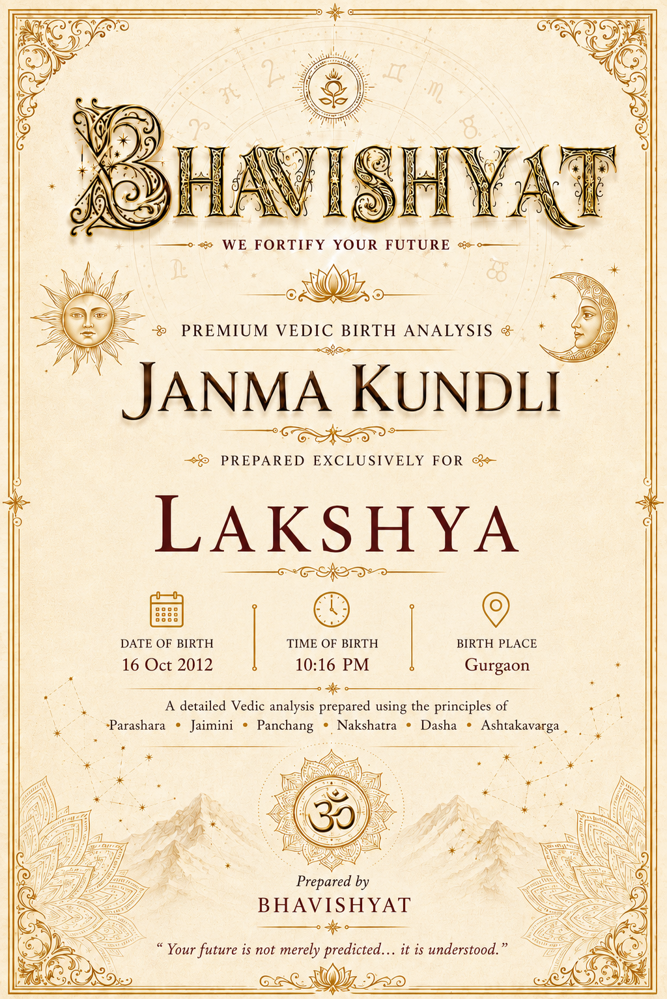
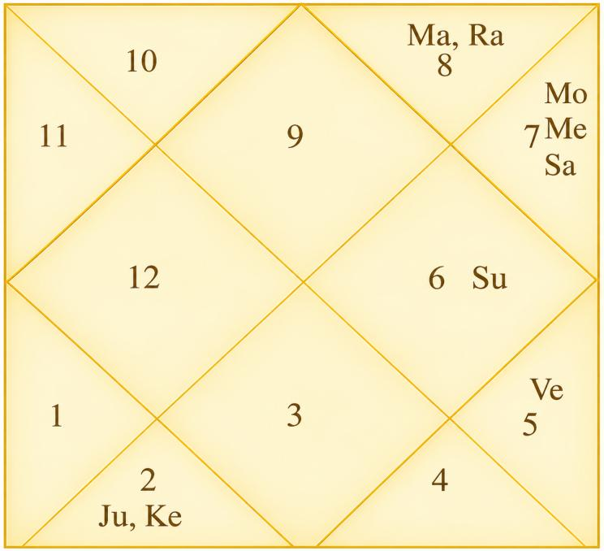

Janma Kundli • Lakshya
Birth Details & Panchang
| Name | Lakshya | Paksha | Shukla |
| Date of Birth | 16 October 2012 | Tithi | Dwitiya (2) |
| Time of Birth | 10:16 PM | Nakshatra | Swati |
| Birth Place | Gurgaon | Vaar | Tuesday |
| Longitude | 77°01' E | Yoga | Preeti |
| Latitude | 28°27' N | Karan | Baalava |
| Ascendant | Sagittarius | Asc Lord | Jupiter |
| Tithi Lord | Moon | Tithi Deity | Brahma |
| Nakshatra Lord | Rahu | Nakshatra Deity | Vayu (Wind God) |
| Yoga Deity | Vishnu | Karan Deity | Brahma |
| Yogi | Mercury | Duplicate Yogi | Moon |
| Abhiyogi | Mars | Dagdha Rashi | Sagittarius (9), Pisces (12) |
Natal Chart (Rashi)

| Planet Distribution | Visible Half — Upper Half (latter part of life more eventful) | ||
| Ascendant | Sagittarius (Dhanu) | Moon / Sun Sign | Libra (Tula) / Virgo (Kanya) |
| Malefic | Moon (Chandra), Venus (Shukra) | Shunya Nakshatra | Purva Bhadrapada |
| Maraka | Saturn (Shani), Mercury (Budha) | Dasha Balance | 4Y 11M 24D |
| Badhaka | Mercury (Budha) | Mangalik | Cancelled |
| Birth Dasha | Ra-Ve-Ra (1-6-1) | ||
Janma Kundli • Lakshya
Favourable Influences
| Benefic Years | 19, 22, 26, 28, 31, 35, 37 | ||
| Favourable Days | Sunday, Thursday, Tuesday | ||
| Favourable Planets | Sun, Jupiter, Mars | ||
| Favourable Signs | Sagittarius (9), Aquarius (11), Pisces (12), Leo (5) | ||
| Favourable Ratna | Yellow Sapphire | Favourable UpRatna | Yellow Topaz, Citrine |
| Lucky Ratna | Ruby | Favourable Deity | Hanuman |
| Favourable Metal | Bronze | Favourable Colour | Yellow |
| Direction | North-East | Favourable Cereals | Gram |
| Favourable Plant | Peepal, Arka (Giant Milkweed) | ||
| Favourable Temple | Jagannath Temple (Puri) | ||
Planets in Rashi Chart
| Planet | Lordship | Sign | Nakshatra | Nak. Lord | Nak. Count | Nav Tara | Char Karak |
|---|---|---|---|---|---|---|---|
| Sun | 9L | Virgo (6) | Chitra | Mars | 27 N | 7 | Atmakarak (Life) |
| Moon | 8L | Libra (7) | Swati | Rahu | 1 N | 8 | Putrakarak (5H) |
| Mars | 5L, 12L | Scorpio (8) | Anuradha | Saturn | 3 N | 9 | Gnatikarak (6H) |
| Mercury | 7L, 10L | Libra (7) | Vishakha | Jupiter | 2 N | 4 | Bhratrikaraka (3H) |
| Jupiter | 1L, 4L | Taurus (2) | Rohini | Moon | 17 N | 2 | Amatyakarak |
| Venus | 6L, 11L | Leo (5) | Purva Phalguni | Venus | 24 N | 6 | Matrikarak (4H) |
| Saturn | 2L, 3L | Libra (7) | Swati | Rahu | 1 N | 3 | DaraKarak (7H) |
| Rahu | — | Scorpio (8) | Anuradha | Saturn | 3 N | 1 | — |
| Ketu | — | Taurus (2) | Krittika | Sun | 16 N | 5 | — |
| Debilitated Planet(s) | — | Combust Planet(s) | Saturn |
| Retrograde Planet(s) | Jupiter | ||
Sarvastakvarga & Houses
| Very Strong (35+) | — | ||
| Strong (31-35) | 1H, 3H, 4H, 9H | ||
| Above Average (28-30) | 7H, 8H | ||
| Below Average (24-27) | 6H, 10H, 11H | ||
| Weak (21-23) | 2H, 5H | ||
| Very Weak (<21) | 12H | ||
Janma Kundli • Lakshya
Houses in Rashi Chart
| House | Sign | Planets | SAV | Lords | Aspect |
|---|---|---|---|---|---|
| 1H | Sagittarius (9) | — | 35 | — | Saturn |
| 2H | Capricorn (10) | — | 22 | — | Jupiter, Ketu |
| 3H | Aquarius (11) | — | 31 | — | Mars |
| 4H | Pisces (12) | — | 35 | — | Rahu |
| 5H | Aries (1) | — | 23 | — | — |
| 6H | Taurus (2) | Jupiter, Ketu | 26 | 1L, 4L | — |
| 7H | Gemini (3) | — | 29 | — | Mars |
| 8H | Cancer (4) | — | 29 | — | Saturn, Rahu |
| 9H | Leo (5) | Venus | 34 | 6L, 11L | — |
| 10H | Virgo (6) | Sun | 27 | 9L | Jupiter, Ketu |
| 11H | Libra (7) | Moon, Mercury, Saturn | 27 | 8L; 7L, 10L; 2L, 3L | — |
| 12H | Scorpio (8) | Mars, Rahu | 19 | 5L, 12L | — |
Bhinnashtak Varga (BAV)
| Sign | Sa | Ju | Ma | Su | Ve | Me | Mo | Ra |
|---|---|---|---|---|---|---|---|---|
| 9 | 4 | 6 | 4 | 4 | 6 | 5 | 6 | 4 |
| 10 | 2 | 3 | 3 | 3 | 5 | 4 | 2 | 4 |
| 11 | 2 | 5 | 5 | 4 | 6 | 3 | 6 | 4 |
| 12 | 7 | 5 | 4 | 5 | 4 | 5 | 5 | 3 |
| 1 | 3 | 4 | 2 | 2 | 4 | 3 | 5 | 5 |
| 2 | 2 | 5 | 3 | 4 | 3 | 5 | 4 | 3 |
| 3 | 3 | 7 | 4 | 4 | 4 | 4 | 3 | 3 |
| 4 | 3 | 3 | 3 | 6 | 4 | 6 | 4 | 4 |
| 5 | 4 | 5 | 4 | 4 | 6 | 6 | 5 | 3 |
| 6 | 5 | 5 | 2 | 5 | 4 | 4 | 2 | 3 |
| 7 | 4 | 3 | 3 | 4 | 4 | 5 | 4 | 4 |
| 8 | 0 | 5 | 2 | 3 | 2 | 4 | 3 | 3 |
Janma Kundli • Lakshya
Vimshottari Dasha
Maha Dasha
| Dasha Lord | From | To |
|---|---|---|
| Rahu | 12-Oct-1999 | 11-Oct-2017 |
| Jupiter | 11-Oct-2017 | 10-Oct-2033 |
| Saturn | 10-Oct-2033 | 10-Oct-2052 |
| Mercury | 10-Oct-2052 | 10-Oct-2069 |
| Ketu | 10-Oct-2069 | 10-Oct-2076 |
| Venus | 10-Oct-2076 | 10-Oct-2096 |
| Sun | 10-Oct-2096 | 11-Oct-2102 |
| Moon | 11-Oct-2102 | 11-Oct-2112 |
| Mars | 11-Oct-2112 | 11-Oct-2119 |
Antar Dasha (Jupiter Maha Dasha)
| AD Lord | From | To |
|---|---|---|
| Jupiter | 11-Oct-2017 | 29-Nov-2019 |
| Saturn | 29-Nov-2019 | 11-Jun-2022 |
| Mercury | 11-Jun-2022 | 16-Sep-2024 |
| Ketu | 16-Sep-2024 | 23-Aug-2025 |
| Venus | 23-Aug-2025 | 23-Apr-2028 |
| Sun | 23-Apr-2028 | 09-Feb-2029 |
| Moon | 09-Feb-2029 | 11-Jun-2030 |
| Mars | 11-Jun-2030 | 18-May-2031 |
| Rahu | 18-May-2031 | 10-Oct-2033 |
Pratyantar Dasha (Venus Antar Dasha)
| P. Dasha | From | To |
|---|---|---|
| Venus | 23-Aug-2025 | 01-Feb-2026 |
| Sun | 01-Feb-2026 | 22-Mar-2026 |
| Moon | 22-Mar-2026 | 11-Jun-2026 |
| Mars | 11-Jun-2026 | 07-Aug-2026 |
| Rahu | 07-Aug-2026 | 31-Dec-2026 |
| Jupiter | 31-Dec-2026 | 10-May-2027 |
| Saturn | 10-May-2027 | 11-Oct-2027 |
| Mercury | 11-Oct-2027 | 26-Feb-2028 |
| Ketu | 26-Feb-2028 | 23-Apr-2028 |
Janma Kundli • Lakshya
Nav Tara Sequence
| Planet | Chara Karak | House | Lordship | Strength | Nakshatra | Lord | Placement |
|---|---|---|---|---|---|---|---|
| Rahu | — | 12H | — | Very Weak (<21) | Anuradha | Saturn | 11H |
| Jupiter | Amatyakarak | 6H | 1L, 4L | Below Avg (24-27) | Rohini | Moon | 11H |
| Saturn | DaraKarak (7H) | 11H | 2L, 3L | Below Avg (24-27) | Swati | Rahu | 12H |
| Mercury | Bhratrikaraka (3H) | 11H | 7L, 10L | Below Avg (24-27) | Vishakha | Jupiter | 6H |
| Ketu | — | 6H | — | Below Avg (24-27) | Krittika | Sun | 10H |
| Venus | Matrikarak (4H) | 9H | 6L, 11L | Strong (31-35) | Purva Phalguni | Venus | 9H |
| Sun | Atmakarak (Life) | 10H | 9L | Below Avg (24-27) | Chitra | Mars | 12H |
| Moon | Putrakarak (5H) | 11H | 8L | Below Avg (24-27) | Swati | Rahu | 12H |
| Mars | Gnatikarak (6H) | 12H | 5L, 12L | Very Weak (<21) | Anuradha | Saturn | 11H |
Birth Chart Nav Tara Chakra
| Rahu (Janam) | 1 | Moon, Saturn | 10 | 19 | ||
| Jupiter (Sampat) | 2 | Mercury | 11 | 20 | ||
| Saturn (Vipat) | 3 | Mars, Rahu | 12 | 21 | ||
| Mercury (Kshem) | 4 | 13 | 22 | |||
| Ketu (Pratyari) | 5 | 14 | 23 | |||
| Venus (Sadhak) | 6 | 15 | 24 | Venus | ||
| Sun (Nidhan) | 7 | 16 | Ketu | 25 | ||
| Moon (Mitra) | 8 | 17 | Jupiter | 26 | ||
| Mars (Ati Mitra) | 9 | 18 | 27 | Sun |
Important Saturn Transits
| 1st Sade Sati | 22 Oct 2038 – 08 Dec 2046 | ||
| 2nd Sade Sati | 30 Aug 2068 – 12 Oct 2076 | ||
| 3rd Sade Sati | 11 Oct 2097 – 29 Nov 2105 | ||
| Ashtam Shani | 08 Aug 2029 – 31 May 2032 | ||
Janma Kundli • Lakshya
Other Important Transits
| Type | Planet | House | SAV/BAV | From – To |
|---|---|---|---|---|
| Good | Saturn | 4H | 35, 7 | 29 Mar 2025 – 02 Jun 2027 |
| Good | Saturn | 4H | 35, 7 | 20 Oct 2027 – 23 Feb 2028 |
| Good | Jupiter | 9H | 34, 5 | 31 Oct 2026 – 24 Jul 2028 |
| Good | Ketu | 1H | 35 | 07 Mar 2019 – 23 Sep 2020 |
| Good | Rahu | 7H | 29 | 07 Mar 2019 – 23 Sep 2020 |
| Challenging | Saturn | 2H | 22, 2 | 17 Jan 2023 – 29 Mar 2025 |
| Challenging | Saturn | 5H | 23, 3 | 08 Aug 2029 – 31 May 2032 |
| Challenging | Jupiter | 11H | 27, 3 | 26 Dec 2028 – 29 Mar 2029; 25 Aug 2029 – 25 Jan 2030 |
| Challenging | Ketu | 10H, 11H | 27, 27 | 12 Apr 2022 – 18 May 2025 |
| Challenging | Rahu | 2H | 22 | 05 Dec 2026 – 23 Jun 2028 |
Lal Kitab Birth Chart
| HN | Rashi | Planets | Varshphal Yr -14 (Oct'25–Oct'26) | Varshphal Yr -15 (Oct'26–Oct'27) |
|---|---|---|---|---|
| 1 | Sagittarius (9) | — | 4 | 9 |
| 2 | Capricorn (10) | — | 1 | 4 |
| 3 | Aquarius (11) | — | 3 | 1 |
| 4 | Pisces (12) | — | 2 | 6 |
| 5 | Aries (1) | — | 5 | 8 |
| 6 | Taurus (2) | Jupiter, Ketu | 7 | 5 |
| 7 | Gemini (3) | — | 8 | 2 |
| 8 | Cancer (4) | — | 11 | 7 |
| 9 | Leo (5) | Venus | 6 | 11 |
| 10 | Virgo (6) | Sun | 12 | 10 |
| 11 | Libra (7) | Moon, Mercury, Saturn | 10 | 12 |
| 12 | Scorpio (8) | Mars, Rahu | 9 | 3 |
Janma Kundli • Lakshya
Part B — Panchang Insights
Tithi — Shukla Paksha Dwitiya
Gives native intelligence, calm speech, diplomacy, negotiation skill and creativity. Professions such as Lawyer, Arbitrator, Mediator, Diplomat, Banker etc. are aligned with this Tithi. However, this Tithi energy may sometimes push the native towards indecision, which should be taken care of.
Moon — Not Paksha Bali (~9% luminous)
Advisable to perform Ganga Snan by native and his mother periodically. It will also dilute the malefic influence on Moon in birth-chart. Moreover, performing Rudrabhishek every birthday is recommended.
Tithi Deity — Brahma / Lord Vishnu
Worshipping Lord Vishnu enhances the positive energy of this Tithi for the native, and ensures riches and wealth to native.
Vaar — Tuesday
Taking initiative, responsibility, action-oriented, courageous, assertive, competitive but impulsiveness and impatience. Gives technical skill and understanding of subject-matter. Visiting Hanuman Temple on Tuesday and reciting Hanuman Chalisa will align the energy of birth weekday and protect health.
Nakshatra — Swati
Independent and open-minded, lucky; good at sales, business and marketing; in different profession/business from that of family/father. Normally has extended family, big family. Well aware of surroundings/subject matter; street smart; fond of traveling. Fond of collecting unique mug/bottle. Good property yoga / beautiful house.
Yoga — Preeti
Favourable for liaisoning, networking, connections, harmony.
Karan — Baalava (Action)
Popular, strong-minded, artistic, poetic, brave, disciplined, graceful and adaptable. Good for education, learning, creative pursuits, public relations (PR related work).
Dagdha Rashi — Sagittarius (9), Pisces (12)
Native may wear gold chain, gold ring in little finger, yellow sapphire etc. for reducing malefic impact of Dagdha Rashi.
Janma Kundli • Lakshya
Rashi Chart Overview
Planet Distribution
As per planetary distribution in Rashi Chart, the latter part of the life would be more eventful than beginning part.
Kal Sarp Yoga
Kal Sarp Yoga in Rashi Chart — take bathe at Har ki Pauri, Haridwar.
Nature, Personality & Appearance — Ascendant Sagittarius
Adventurous, optimistic, philosophical, free-spirited, loves adventure and learning.
Graceful appearance, long face, thick nose, ears, teeth and lips. Loves travel, philosophy, temples, law, new experiences; dislikes restrictions.
Free, generous, honest, reliable and God-fearing. Alert, intuitive and reaches the point quickly. Straightforward with a strong sense of justice. Conventional and business-like, sometimes restless and over-anxious. Dual temperament. Versatile and eager to know everything. Cheerful, adaptable and content with a simple life. Lover of art and poetry with creative ability. Exercises strict control over food. Neat, orderly, methodical and diligent. Self-confident and completes work once started. Gains favour from government. Successful as a teacher, public speaker, religious head, judge or advocate.
Weakness — Sagittarius Ascendant
Reckless, blunt, commitment-averse, careless, over-optimistic, impatient, bad eating habits (strong Lagna dilutes these impacts).
Moon Sign — Libra
Gentle, compassionate, courteous and honest. Excellent judgment, weighs pros and cons thoroughly before reaching conclusions. Upright, sympathetic, flexible and sensitive. Anger is quickly pacified. Thinks more of others than self. Argues with clarity and foresight. Always stands for justice, harmony, love and peace. Changes residence frequently and enjoys travelling. Likes a high standard of living, good dress, furniture, vehicles and comforts. May have another name associated with a god or goddess. Good trader, popular, good business partner, successful salesman, liaison officer.
Janma Kundli • Lakshya
Impact of Planetary Placements
1st House
Lots of success in career (extremely good), reaching high rank and status at very powerful places; good for govt. job and politics, govt job yoga / govt related work, name and fame, growth in life of native's father before the age of 10 years of native. Disagreement/dispute with father / fatherly figures, ego issues/aggression.
2nd House
Gives break in education, avoid studying at night, wealth yoga, money-minded.
3rd House
Good for medical field. Good knowledge for medicine; native has to visit hospital frequently (due to any reason).
4th House
Big friend circle, good for income, wealth yoga, multiple sources of income, loves to travel, takes shortcut to earn money. Native gets associated with foreign, distant place, court of law or medical field due to career or some other reason.
5th House
Problems to maternal relatives, gives laziness, native doesn't listen to teacher (guru equivalent) easily; breathing / lung related issues to someone in family; success in competition, father does everything for this native.
6th House
Foreign travel yoga, native usually lives away from father. Native wears white shoes, problem in floor of the house (uneven, different colour or some problem).
Janma Kundli • Lakshya
Impact of Planetary Placements (contd.)
7th House
Good for wealth & property & vehicles, good & supportive siblings and friend circle, name & fame, connection with influential people. Income through property.
8th House
Disturbed sleep, lot of plans but less execution, unnecessary expenditure, foreign income yoga, sudden gains, out of the box thinking, competition killer; visit to Middle east / Muslim countries.
9th House
Defeats enemies, not good for maternal relatives, cuts debt/loan but gives health issues such as bones, legs pain related issues.
10th House
Break in education / change of stream; surgery to self / mother. Frequent change of work / workplace, property dispute. Hearing issues likely to mother of native.
Planetary Combinations
Lots of Travel / Fake Guru
Lots of travel in life, prone to fall for fake guru, native doesn't bless anyone easily.
Mango Tree / God's Blessing
Mango tree near native home; God's blessing.
Moon + Mercury
Very good for wealth; earning from foreign / foreign clients; beware of addiction; gives negative thoughts in relevant dasha period, superstitious beliefs; decision making issues; losses / sickness in travel; skin, nervous system, breathing issues to self or mother.
Saturn + Moon
Vish yoga; gives negative thoughts, seriousness in life, some long disease to mother. Waist / feet pain to native, diabetes prone.
Time & Electric Equipment
Worried about time (to be on time); problem to electric equipment frequently.
Janma Kundli • Lakshya
12 Houses of Rashi Chart
- Active and tall, fiery temperament, magnetism, optimistic, adventurous, natural inclination for learning something new and gain of knowledge, much travel in life, marriage(s) in family / relatives around birth / in childhood.
- Questions religious practice, rituals. Good advisor, lucky in general. Native carries themselves well.
- The theme of life different in 1st and 2nd part. Blessed for learning and knowledge. Should be careful of ego of knowledge/work, away from home / birthplace (rise in life).
- Food related issues, irregular eating habit — prone, discipline in food habit crucial, money-saving becomes challenging, after lot of efforts.
- Dedicated towards family; wealth accumulation not easy.
- Earning through communication skills, networks, short travel work, communication related work. Money through social media.
- Spending a lot on house / vehicle (stretching budget), living away from birthplace / family, investment in real estate. Spiritual vibes in house. Water related painting at home.
- Sharp mind, good analytical skill, focused on education, teaching skills, ego issues / difference of opinion with father / father-figure such as boss, authority.
- Good debating skill, winning in arguments, inviting health issues through eating habits; wealth comes through service, loans etc.
- Good at public dealings, multitasker, multiple businesses.
- Moody and intuitive, mother's health may be a challenge; foreign source of income.
- Lucky for father, fond of traveling, good for higher studies.
Sarvashtakvarga — Yearly Outlook
| Tough Years | 4, 39 | ||
| Good Months of the Year | December – January, March – April, July – October | ||
| Challenging Months of the Year | January – February, April – June, October – December | ||
| Lucky People for Native | Sagittarius (9), Aquarius (11), Pisces (12), Leo (5) | ||
| Unfavourable People for Native | Capricorn (10), Libra (7), Virgo (6), Taurus (2) | ||
| Aptitude | Yoga for strong personality, multiple skillsets, support of luck and gain of powerful position | ||
| Favourable Months for Starting Education | March – April, June – July | ||
| Strong Lagna | Strong Lagna of native will save from problems — relatively less problems will have to be faced | ||
| Wealth-Giving Dasha / Antardasha | Moon, Ketu, Jupiter, Sun, Mars, Venus, Saturn | ||
| Transit Note | Transit of Jupiter and Saturn very supportive during mid-2025 to mid-2028 | ||
Janma Kundli • Lakshya
12 Houses of Rashi Chart (contd.)
- Workaholic nature, native keeps upgrading their skillset, working style. Critical of workplace / co-workers.
- Selective about gains / source of income; contacts with important people.
- Keep bed in very good state, as it is prone to get cluttered; avoid eating on bed; sleep disturbance usually, beware of investment cheatings.
- Competitive spirit, likes to be alone; can leave things / people easily; good for service sector; ability to put lots of efforts; affects confidence of native; worship Lord Ganesha.
- Wealth yoga; making money from money; money minded; multiple sources of income; family helps in earning / career.
- Sibling supports in wealth gain; gains through communication skills.
- Lives away from birthplace; change of residence frequently; living in small house/flat.
- Education at distant place / foreign; dreamy, imaginative; ability to see big picture; native not lives with grand-father (for long).
- Luck supports in competition, dispute, job etc.; being disciplined boosts luck of native.
- Earning through partnership, collaboration; much involved in friend / social circle.
- Earnings through hidden sources, commission work, losses of other; don't donate for construction of Dharmshala; smart at earning money.
Janma Kundli • Lakshya
12 Houses of Rashi Chart (contd.)
- Luck supports in profession / job; mentor and father help in career; powerful career yoga.
- Career involving networking, connections, liaison work, collaboration, public dealing.
- Gain through father / mentor / religious travel and religious practices; social welfare.
- Good for investment; beware of cheating in investment; prone to problem with left eye.
Karmic Remedies — Lal Kitab
Planet in Houses
- Avoid blue / black clothes, throw coin in river, use white cap. Never colour hairs in black.
- Avoid taking tabeez.
- Wear gold ring.
- Avoid wearing white shoes, keep floor of house in good condition.
- Never gift liquor.
- Avoid blue bed sheet, blue footwear. Use red instead.
Planet in Signs
- Wear 3-metal ring. Prefer having meal in the kitchen.
- Never donate pen/pencils/stationery.
- Never donate liquor.
- Water leakage / wastage should be solved, whenever happens.
- Never take pickle / sour / papad etc. from anyone.
Abbreviations
A Sacred Dedication
With Love & Blessings
for Lakshya's journey ahead
श्रद्धावान् लभते ज्ञानं तत्परः संयतेन्द्रियः।
ज्ञानं लब्ध्वा परां शान्तिमचिरेणाधिगच्छति॥ ३९॥
जो श्रद्धावान मनुष्य पूर्ण समर्पण के साथ अपने मन और इंद्रियों पर नियंत्रण रखता है, वह दिव्य ज्ञान को प्राप्त कर लेता है। ज्ञान प्राप्त करने के बाद वह शीघ्र ही परम शांति को प्राप्त करता है।
"The one who is full of faith, devoted to knowledge, and has subdued the senses obtains this wisdom; and upon obtaining it, attains supreme peace without delay."
— Bhagavad Gita, Chapter 4, Verse 39
May Lakshya walk his path with faith, wisdom and purpose — ever guided by the light of knowledge, and ever rising toward the greatness his chart holds within.